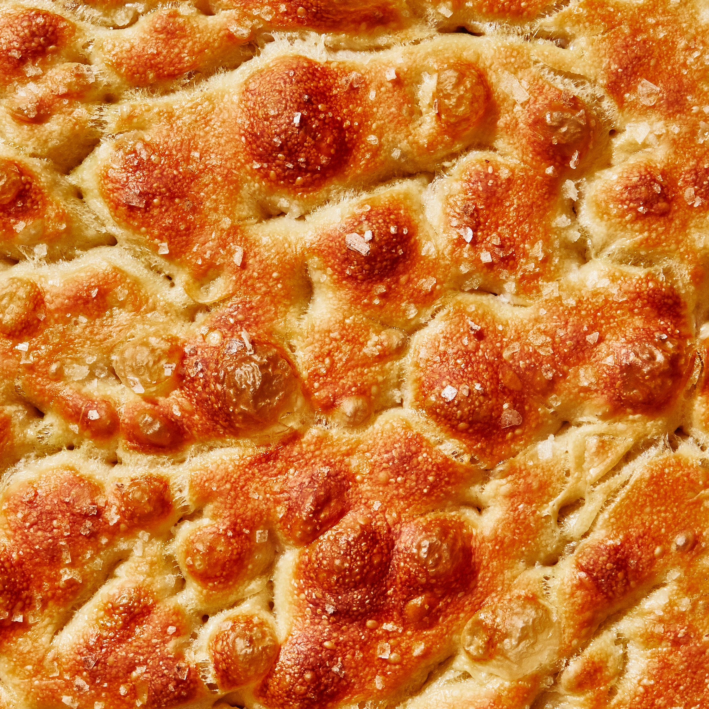

Focaccia Bread

For the uninitiated, focaccia (pronounced fo-kah-cha) is an Italian flatbread made from a base similar to pizza dough that can be either sweet or savoury. The dough of focaccia is flavoured with olive oil and sometimes topped with herbs, vegetables and other ingredients like raisins or olives. In Italy, the Liguria region, with its capital Genoa, is the area best known for focaccia. An early prototype of modern pizza, it’s thought to have originated with the Etruscans or Ancient Greeks.
Ingredients
- 1 (¼-oz.) envelope active dry yeast (about 2¼ tsp.)
- 2 tsp. honey
- 5 cups (625 g) all-purpose flour
- 1 Tbsp. Morton kosher salt
- 6 Tbsp. extra-virgin olive oil, divided, plus more for hands
- Flaky sea salt
- 4 Tbsp. unsalted butter, plus more for pan
- 2-4 garlic cloves
Preparation
- Whisk one ¼-oz. envelope active dry yeast (about 2¼ tsp.), 2 tsp. honey, and 2½ cups lukewarm water in a medium bowl and let sit 5 minutes (it should foam or at least get creamy; if it doesn’t your yeast is dead and you should start again—check the expiration date!).
- Add 5 cups (625 g) all-purpose flour and 5 tsp. Diamond Crystal or 1 Tbsp. Morton kosher salt and mix with a rubber spatula until a shaggy dough forms and no dry streaks remain.
- Pour 4 Tbsp. extra-virgin olive oil into a big bowl that will fit in your refrigerator. This puppy is going to rise! Transfer dough to bowl and turn to coat in oil. Cover with a silicone lid or plastic wrap and chill until dough is doubled in size (it should look very bubbly and alive), at least 8 hours and up to 1 day. If you're in a rush, you can also let it rise at room temperature until doubled in size, 3–4 hours.
- Generously butter a 13x9" baking pan, for thicker focaccia that’s perfect for sandwiches, or an 18x13" rimmed baking sheet, for focaccia that's thinner, crispier, and great for snacking. The butter may seem superfluous, but it’ll ensure that your focaccia doesn’t stick. Pour 1 Tbsp. extra-virgin olive oil into center of pan. Keeping the dough in the bowl and using a fork in each hand, gather up edges of dough farthest from you and lift up and over into center of bowl. Give the bowl a quarter turn and repeat process. Do this 2 more times; you want to deflate dough while you form it into a rough ball. (We learned this technique from Alexandra Stafford, who uses it to shape her no-knead bread.) Transfer dough to prepared pan. Pour any oil left in bowl over and turn dough to coat it in oil. Let rise, uncovered, in a dry, warm spot (like near a radiator or on top of the fridge or a preheating oven) until doubled in size, at least 1½ hours and up to 4 hours.
- Place a rack in middle of oven; preheat to 450°. To see if the dough is ready, poke it with your finger. It should spring back slowly, leaving a small visible indentation. If it springs back quickly, the dough isn’t ready. (If at this point the dough is ready to bake but you aren’t, you can chill it up to 1 hour.) Lightly oil your hands. If using a rimmed baking sheet, gently stretch out dough to fill (you probably won't need to do this if using a baking pan). Dimple focaccia all over with your fingers, like you’re aggressively playing the piano, creating very deep depressions in the dough (reach your fingers all the way to the bottom of the pan). Drizzle with remaining 1 Tbsp. extra-virgin olive oil and sprinkle with flaky sea salt. Bake focaccia until puffed and golden brown all over, 20–30 minutes.
- Hold off on this last step until you're ready to serve the focaccia: Melt 4 Tbsp. unsalted butter in a small saucepan over medium heat. Remove from heat. Peel and grate in 2–4 garlic cloves with a Microplane (use 2 cloves if you’re garlic-shy or up to 4 if you love it). Return to medium heat and cook, stirring often, until garlic is just lightly toasted, 30–45 seconds. (Or, if you prefer raw garlic to toasted garlic, you can grate the garlic into the hot butter, off heat, then brush right away.)
- Brush garlic-butter all over focaccia and slice into squares or rectangles.